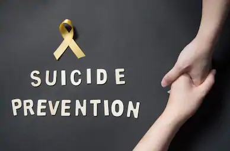

Each Rupee brings us closer to a World without Suicide

Suicide Facts
There is no single cause to suicide. It most often occurs when stressors exceed current coping abilities of someone suffering from a mental health condition.
General Facts
About 800,000 people die by suicide worldwide every year, of these 135,000 (17%) are residents of India
In India, about 46,000 suicides occurred each in 15–29 and 30–44 age groups in 2012 – or about 34% each of all suicides.
The NCRB data shows that 10,159 students died by suicide in 2018, an increase from 9,905 in 2017, and 9,478 in 2016.
According to the data, 80 people killed themselves due to loneliness and fear of being tested positive for the virus.
According to the first comprehensive ‘Mental Health Survey’ conducted by NIMHANS in 2016 an estimated 150 million persons are in need of mental health interventions.
Prevention
Reducing social isolation
Preventing social disintegration
Treating mental disorders
Regulating the sale of pesticides & ropes
Promoting psychological motivational sessions and meditation and yoga.
Here are five steps you can take to help someone in emotional pain:
ASK: “Are you thinking about killing yourself?” It’s not an easy question, but studies show that asking at-risk individuals if they are suicidal does not increase suicides or suicidal thoughts.
KEEP THEM SAFE: Reducing a suicidal person’s access to highly lethal items or places is an important part of suicide prevention. While this is not always easy, asking if the at-risk person has a plan and removing or disabling the lethal means can make a difference.
BE THERE: Listen carefully and learn what the individual is thinking and feeling. Research suggests acknowledging and talking about suicide may reduce rather than increase suicidal thoughts.
HELP THEM CONNECT: Save the National Suicide Prevention Lifeline’s and the Crisis Text Line’s number in your phone, so it’s there when you need it. You can also help make a connection with a trusted individual like a family member, friend, spiritual advisor, or mental health professional.
STAY CONNECTED: Staying in touch after a crisis or after being discharged from care can make a difference. Studies have shown the number of suicide deaths goes down when someone follows up with the at-risk person.